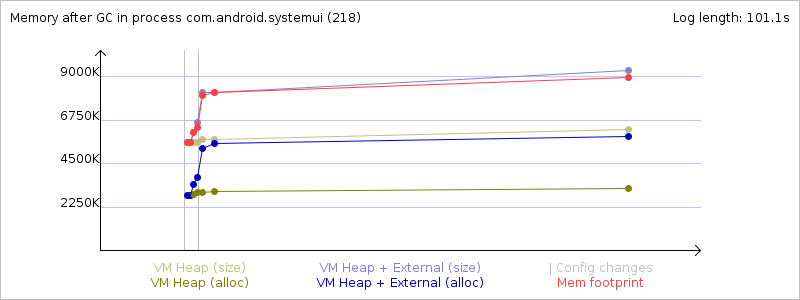
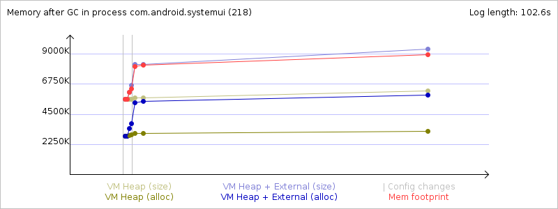

Mem info from 'meminfo' service:
** MEMINFO in pid 218 [com.android.systemui] **
native dalvik other total
size: 6132 6279 N/A 12411
allocated: 6004 3494 N/A 9498
free: 99 2785 N/A 2884
(Pss): 1575 1160 5541 8276
(shared dirty): 940 1756 5228 7924
(priv dirty): 1536 340 5012 6888
Objects
Views: 0 ViewRoots: 0
AppContexts: 1 Activities: 0
Assets: 2 AssetManagers: 2
Local Binders: 22 Proxy Binders: 20
Death Recipients: 1
OpenSSL Sockets: 0
SQL
heap: 0 MEMORY_USED: 0
PAGECACHE_OVERFLOW: 0 MALLOC_SIZE: 0
Memory usage from GC system logs:
Memory usage from GC event logs:
